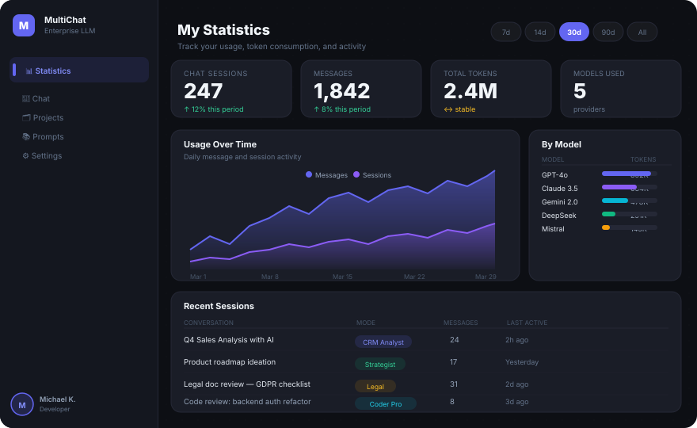

AI platforms, an offline-first healthcare PWA, and company websites. Each with its own architectural challenge.
Enterprise extension of the Onyx open-source AI platform. Delivered user analytics, multi-level prompt library, chat mode indicator, and full Playwright E2E test coverage.

Offline-first Progressive Web App for Primary Health Centres across Nnewi North LGA, Anambra State. Patient registration, maternal care (ANC/PNC), immunization tracking, queue management, and NHMIS-aligned reporting. All fully functional with no internet connection, built for low-end Android devices in underserved communities.
AI document intelligence platform. Users upload PDFs, ingest them into a vector database, extract structured JSON with state-of-the-art LLMs, and execute reusable AI tasks with configurable agent types and reasoning levels.
Responsive, modern company websites built and shipped for AI and tech startups.
AI consulting and software development firm specialising in integrating large language models with enterprise data. Services include custom software, ERP/CRM enterprise solutions, and IT consulting.
Company website for an AI-focused technology startup. Designed and delivered a modern, responsive web presence with a focus on clean UX and clear product communication.